Sinh viên năm nhất - Đại học Việt-Nhật
Bài tập dự án cá nhân (Digital Portfolio)
Tìm hiểu thêm về em
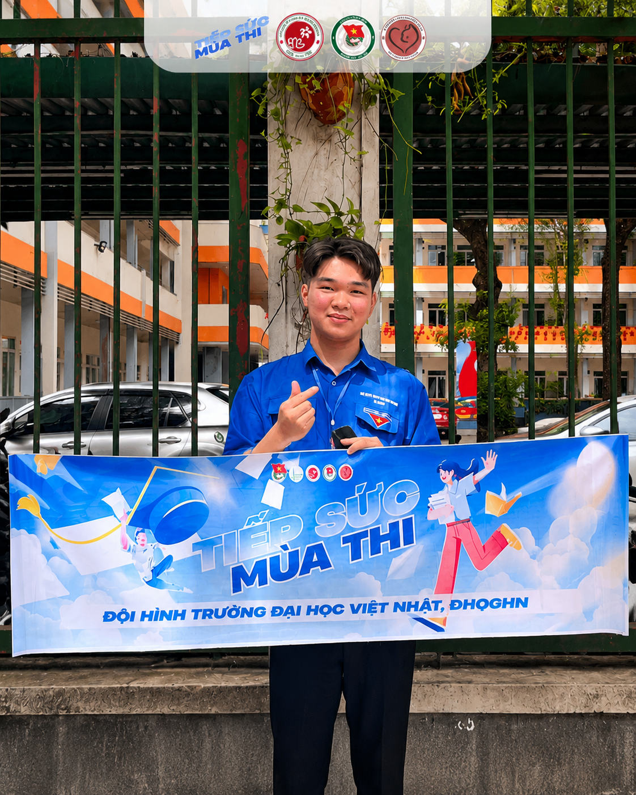
Em là sinh viên năm nhất ngành công nghệ chip bán dẫn, đang trên hành trình khám phá và phát triển các kỹ năng công nghệ số cần thiết cho thế kỷ 21.
Mục tiêu nghề nghiệp: Trở thành một kỹ sư công nghệ chip bán dẫn có khả năng giải quyết vấn đề sáng tạo và đóng góp giá trị cho cộng đồng thông qua công nghệ.
Sở thích: Lập trình, nghiên cứu AI, đọc sách công nghệ, và tham gia các dự án mã nguồn mở.
Những bước đi trong môn học Nhập môn Công nghệ số
Làm quen với môn học, hiểu được tầm quan trọng của kỹ năng công nghệ số trong thời đại hiện đại.
Học cách sử dụng từ khóa hiệu quả, đánh giá nguồn tin cậy, và khai thác dữ liệu từ nhiều nguồn khác nhau.
Khám phá sức mạnh của AI, học cách viết prompt hiệu quả, và ứng dụng AI vào học tập và giải quyết vấn đề.
Làm việc nhóm với các công cụ số, giao tiếp hiệu quả, và quản lý dự án cộng đồng.
Sử dụng AI để tạo nội dung đa phương tiện, thiết kế và trình bày ý tưởng một cách chuyên nghiệp.
Tổng hợp kiến thức, hoàn thiện portfolio, và phản ánh về hành trình học tập của bản thân.
Tổng hợp các bài học và kỹ năng phát triển
Mục tiêu: Ở bài đầu tiên,em đã làm quen với các thao tác cơ bản với folder và file của hệ điều hành Windows và kĩ năng quản lý dữ liệu một cách khoa học.
Quá trình thực hiện: Thực hành tạo cấu trúc thư mục ThucHanh_CaoTinDuong, tạo và đổi tên tệp GhiChuQuanTrong.txt, sao chép dữ liệu vào thư mục TaiLieu bằng Ctrl+C/Ctrl+V, và thực tập xóa/khôi phục từ Recycle Bin.
Kỹ năng đạt được: Thành thạo tổ chức cây thư mục logic, sử dụng phím tắt để tối ưu tốc độ làm việc và hiểu tầm quan trọng của quản lý dữ liệu ngăn nắp.
Sản phẩm: Cấu trúc thư mục học tập và tệp ghi chú với minh chứng thao tác thành công.
Tự đánh giá: Mặc dù đây là các thao tác đơn nhưng không phải ai cũng làm,Em đã luyện tập để việc tìm kiếm các thư mục không còn tốn thời gian.
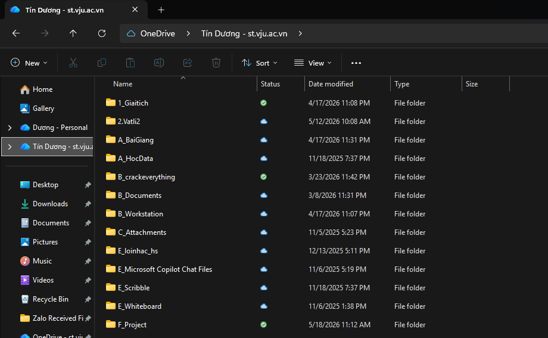
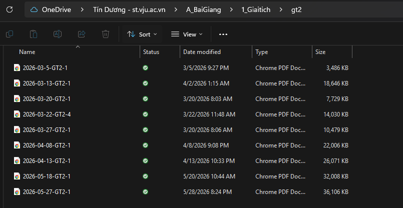
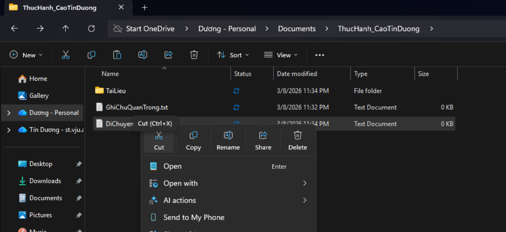
Mục tiêu: Nghiên cứu theo câu hỏi với chủ đề "Ứng dụng AI trong Thiết kế và Sản xuất Vi mạch Bán dẫn" và rèn luyện kỹ năng khai thác tài liệu uy tín.
Quá trình thực hiện: Em sử dụng từ khóa học thuật như "Machine learning in Electronic Design Automation" và yêu cầu AI như ChatGPT,Gemini tìm các nguồn trên IEEE Xplore, Nature, Springer và McKinsey.Sau đó áp dụng bộ lọc từ năm 2021 và đánh giá 12 nguồn theo độ tin cậy High/Medium/Low dựa trên checklist có sẵn.
Kỹ năng đạt được: Em đã biết cách và cấu trúc trích đẫn dạng Harvard và khả năng phân tích và đánh giá nguồn thông tin về nội dung và chất lượng.
Sản phẩm: Em đã kết hợp với AI để đánh giá và phân tích 12 nguồn thông tin học thuật về tác giả, trích dẫn và phương pháp nghiên cứu để đánh giá độ tin cậy của tài liệu.
Tự đánh giá: Em đã nắm vững được cách đánh giá độ tin cậy của các nguồn thông tin học thuật và nhận ra hiện tượng hallucination của AI xảy ra rất thường xuyên và điều đó gây nên những sai lệch nghiêm trọng với những nhà nghiên cứu phụ thuộc phần lớn vào AI.
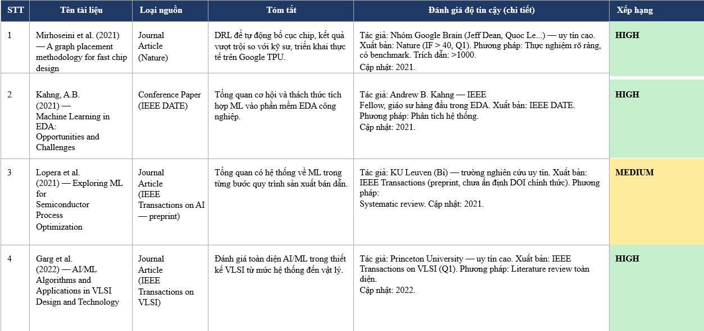
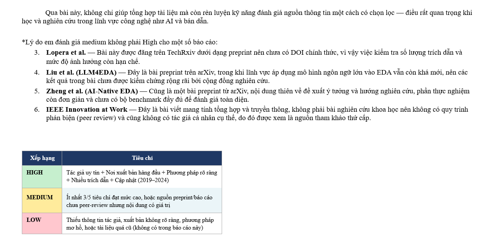
Mục tiêu:Học cách sử dụng prompt hiệu quả để tương tác với AI nhằm ra kết quả như mong muốn và giảm thiểu sổ lượng token phải sử dụng.
Quá trình thực hiện: Qua quá trình thử nghiệm 3 phiên bản prompt (Cơ bản, Cải tiến, Nâng cao). Áp dụng Role Prompting, Chain-of-Thought và Few-shot Prompting sau đó so sánh sự chính xác của kết quả và khả năng tùy biến của từng prompt được trả về.
Kỹ năng đạt được: Em hiểu được chất lượng đầu ra của chatbot tỉ lệ thuận với độ rõ ràng của 3 chiều: Ai đang nói (vai trò), Cấu trúc (định dạng) và Ngữ cảnh (đối tượng). Từ đó rút ra được các nguyên tắc viết prompt hiệu quả.
Sản phẩm: Em đã viết báo cáo phân tích hiệu quả các phiên bản prompt và bộ nguyên tắc 6 bước viết prompt hiệu quả.
Tự đánh giá: Em rút ra kinh nghiệm rằng đặt câu hỏi đúng đôi khi quan trọng hơn tìm câu trả lời. Prompt có chiến lược giúp em tiết kiệm thời gian và cho kết quả hợp ý.
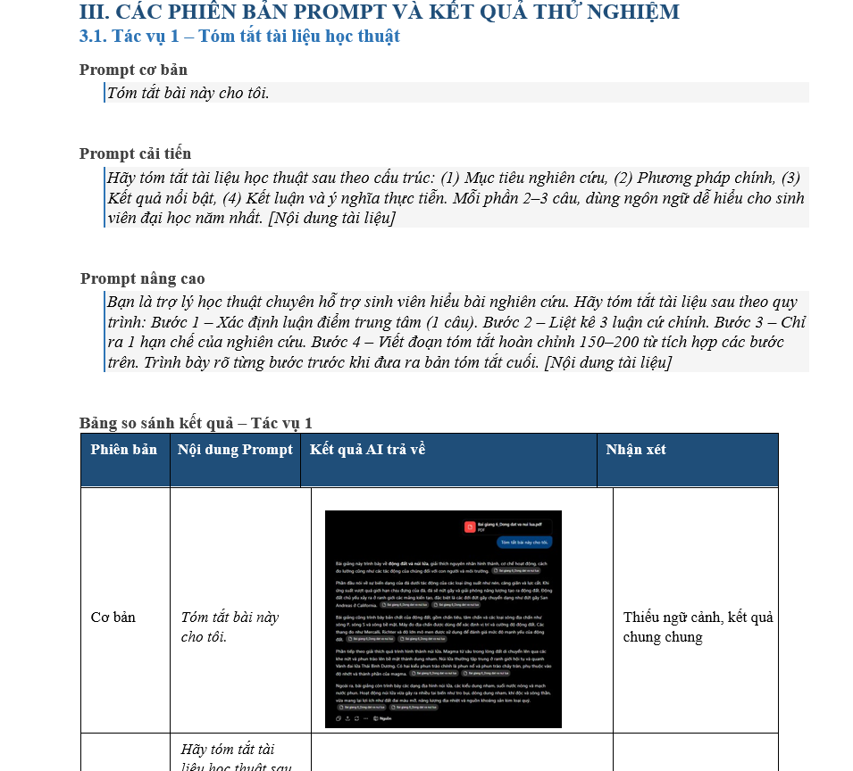
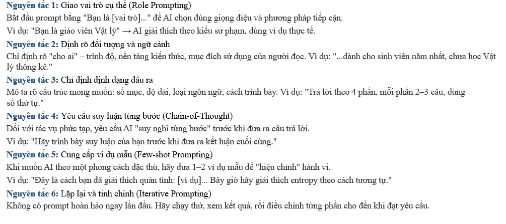
Mục tiêu: Học cách sử dụng các công cụ hợp tác trực tuyến để tăng hiệu suất làm việc và cải thiện khả năng phối hợp trong nhóm.
Quá trình thực hiện:Bọn em có một dự án chung cho bài khoa học kĩ thuật cấp tỉnh,em đề xuất sử dụng trello để quản lý công việc
Google Drive để lưu dữ liệu cần thiết
Discord để trao đổi các vấn đề ngoài ra bọn em dùng github để quản lý mã nguồn và phiên bản
Kỹ năng đạt được: Qua đó em học được cách làm việc nhóm hiệu quả và sử dụng các công cụ hỗ trợ để tối ưu hóa quy trình làm việc.
Sản phẩm: Một số ảnh chụp trong quá trình làm việc và đánh giá hữu dụng của các công cụ quản lý.
Tự đánh giá:Giờ đây, các công cụ hợp tác trực tuyến đã khiến năng suất làm việc tăng lên đáng kể.
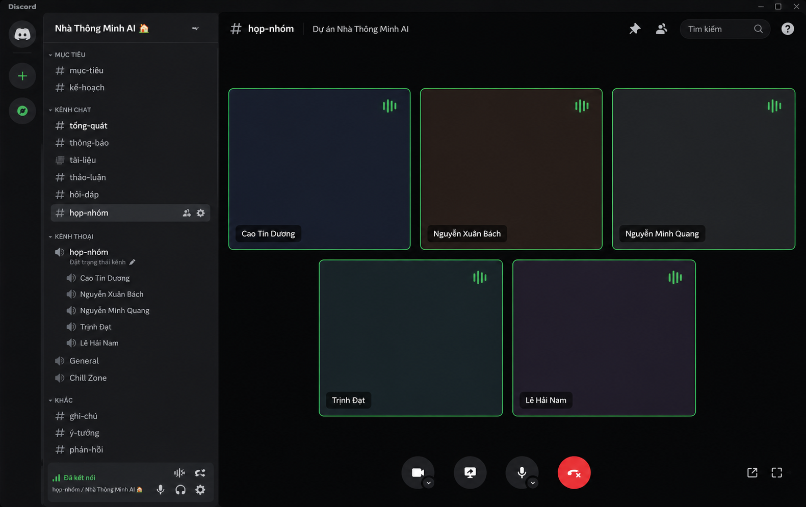
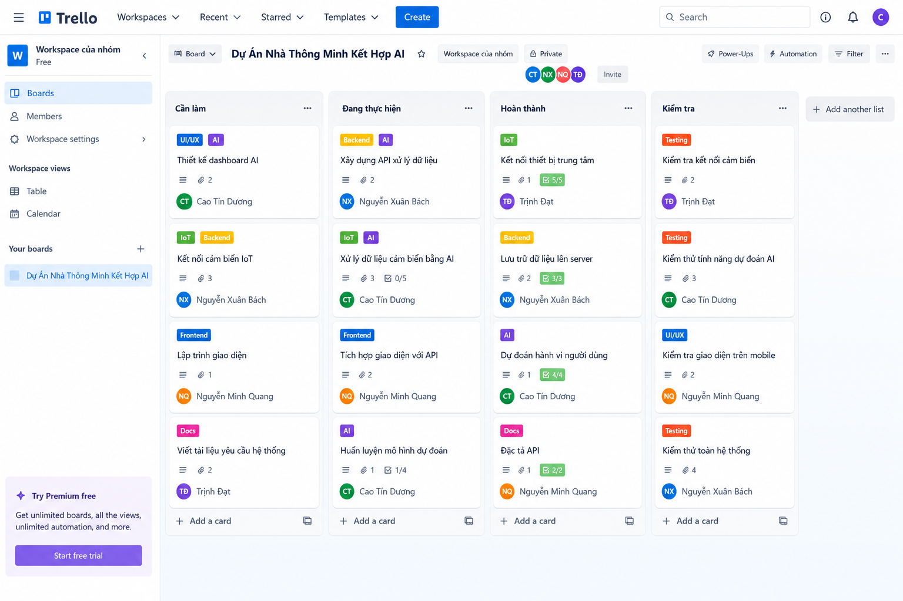
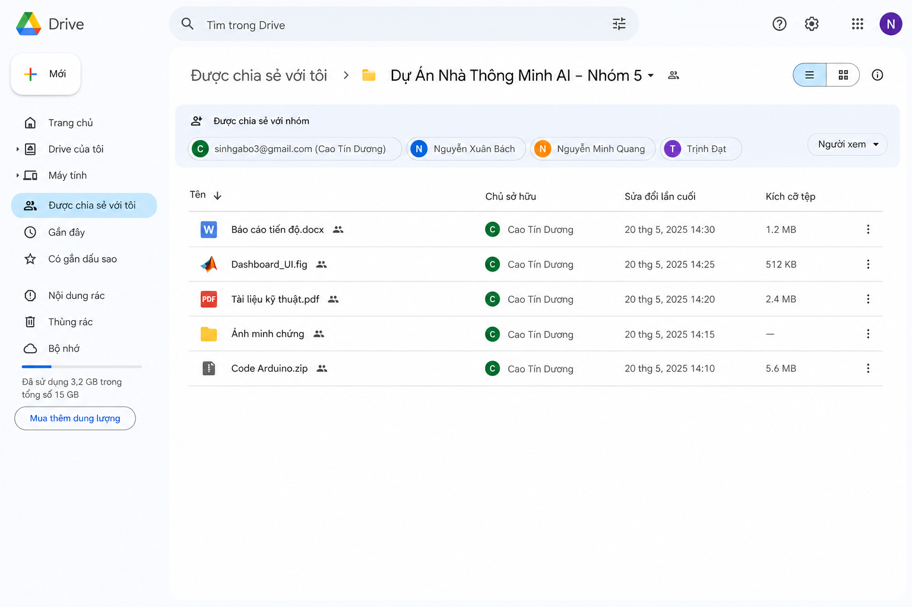
Mục tiêu: ở bài 5,em sử dụng tổ hợp công cụ AI để thực hiện dự án thuyết trình "Công nghệ AI và Tương lai".
Quá trình thực hiện: Dùng Claude lên outline logic và vẽ mind map (tiết kiệm 75% thời gian), DALL-E 3 tạo hình ảnh mạng neural, Canva AI thiết kế layout. Sau đó dựa vào khung có sẵn viết lại nội dung với văn phong của bản thân.
Kỹ năng đạt được: Thành thạo tích hợp nhiều công cụ AI cho nhiều mục đích khác nhau, rút ngắn thời gian rất nhiều. Và em cũng nhận thức rõ rủi ro hallucination của AI nên luôn kiểm chứng thông tin.
Sản phẩm: Bài thuyết trình 15 slide chuyên nghiệp và bảng so sánh hiệu quả các công cụ ChatGPT, DALL-E 3, Canva AI.
Tự đánh giá: AI không thay thế người sáng tạo mà là công cụ khuếch đại năng lực. Tự hào ở khâu thêm góc nhìn cá nhân.
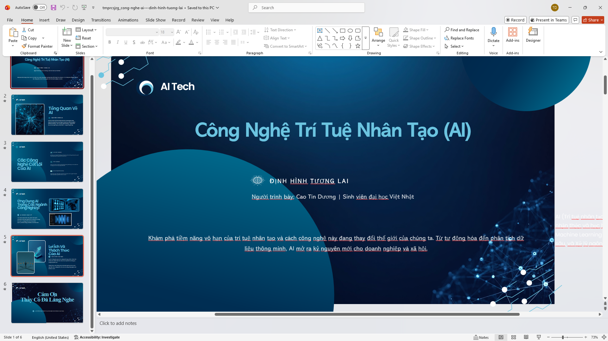
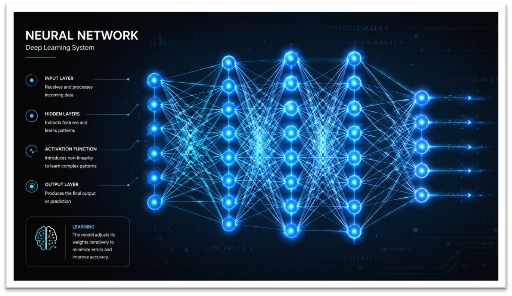
Mục tiêu: Trong bài này em đã xây dựng bộ nguyên tắc cá nhân để sử dụng AI đúng chuẩn mực đạo đức dựa trên các quy định của nhà trường.
Quá trình thực hiện: Nghiên cứu chính sách của Đại Học quốc gia Hà Nội và trường đại học Việt Nhật so sánh với HUST(Đại học bách khoa Hà Nội).Sau đó xác định ranh giới giữa hỗ trợ hợp lý và gian lận.
Cuối cùng em đúc kết được quy trình 5 bước: Tự suy nghĩ → AI hỗ trợ → Xác minh → Chỉnh sửa → Trích dẫn minh bạch.
Kỹ năng đạt được: Xây dựng 7 nguyên tắc cá nhân, quan trọng nhất: AI là công cụ hỗ trợ không thay thế tư duy và luôn trích dẫn minh bạch theo chuẩn APA/IEEE.
Sản phẩm: Báo cáo "Sử dụng AI có trách nhiệm trong học tập"
Tự đánh giá: Tại VNU-VJU, sử dụng AI có trách nhiệm thể hiện tinh thần học thuật nghiêm túc theo chuẩn Nhật Bản. Cam kết công khai việc sử dụng AI.
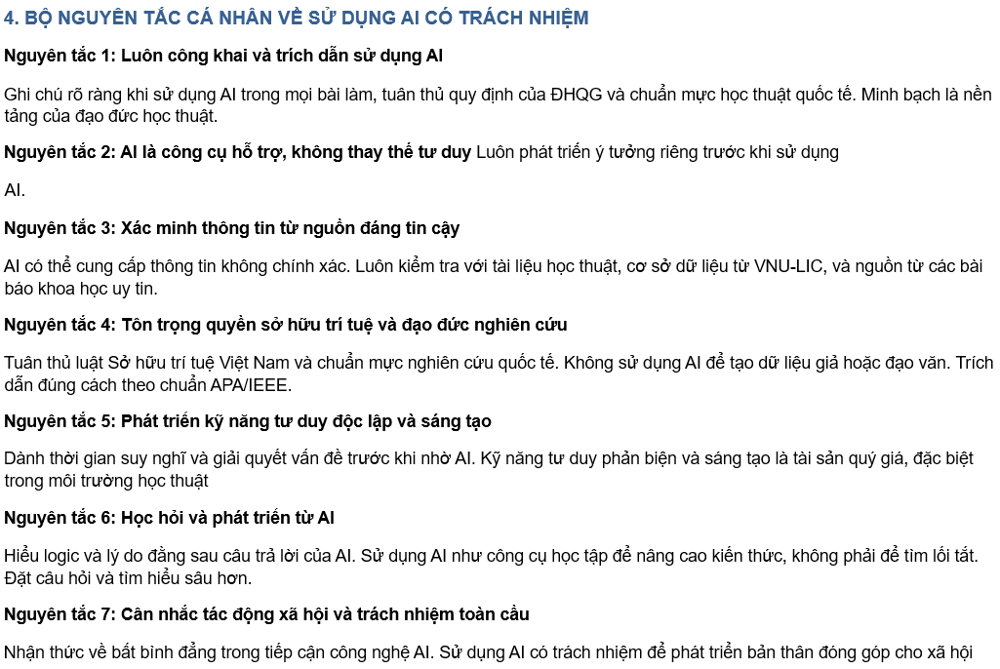
Những con số đáng tự hào
Nhìn lại hành trình và định hướng tương lai
Thông qua môn học Công nghệ số và ứng dụng trí tuệ nhân tạo, em nhận thấy mình đã thực sự thay đổi cách học tập và quản lí dữ liệu. Bắt đầu từ những kỹ năng cơ bản như quản lý tệp tin logic đến việc khai thác thông tin từ các cơ sở dữ liệu học thuật uy tín như IEEE Xplore hay Nature. Đến cách sử dụng AI tạo sinh để ứng dụng vào công việc. Tuy nhiên, bài học giá trị nhất mà em rút ra được là AI không thay thế con người mà là "công cụ khuếch đại năng lực". Mọi sản phẩm cuối cùng đều ghi dấu ấn cá nhân thông qua việc định hướng chủ đề, kiểm duyệt nội dung và cá nhân hóa ngôn ngữ của chính em.
Đặc biệt, học tập trong môi trường VNU, em nhận thức sâu sắc về tầm quan trọng của liêm chính học thuật và đạo đức nghiên cứu theo chuẩn mực quốc tế và văn hóa Nhật Bản. Em đã tự xây dựng cho mình bộ nguyên tắc sử dụng AI dựa trên quy trình 5 bước:
Tự suy nghĩ → AI hỗ trợ → Xác minh → Chỉnh sửa → Trích dẫn minh bạch.
Điều này giúp em tận dụng sức mạnh công nghệ mà vẫn duy trì tính toàn vẹn và trách nhiệm trong học thuật.
Trong tương lai, với vai trò là một sinh viên, em sẽ sử dụng công nghệ và AI một cách có trách nhiệm, minh bạch, đồng thời không ngừng học hỏi để nâng cao năng lực bản thân.